Oii Debiii 💖💖💖
Bom, imagino que agora você esteja se sentindo com vergonha, mas saiba que tudo isso foi feito com coração, amor e cuidado. Toda essa ideia surgiu no domingo, quando você comentou que estava se sentindo pessima e sua autoestima estava la embaixo por causa da tpm.... MALDITA COLICA AUUUUUUUUUUUUU 🐺🐺🐺🐺🐺..... enfim, achei isso um absurdo, alguem tão bela, incrivel, gentil, alegre e esbelta se sentir assim, então eu decidi fazer uma pequena homenagem para você no dia das mulheres, pois quero que saiba que voce para mim representa o modelo do que é ser mulher, eu não sou muito bom com HTML e CSS, mas por você decidi me aventurar um pouco para te entregar algo de coração, as seleções de fotos foi pensadas em fotos onde você está espetacular (como sempre) mas tambem selecionei fotos que eu particulamente adoro, não deu para colocar todas ai....infelizmente, mas selecionei algumas que são tão importantes quanto. Espero que goste rsrsrs
Um Breve Resumo
Acredito que o que eu sinto por você não é nenhuma novidade, gosto de deixar claro o quanto lhe admiro e o quanto sou apaixonado por você, não sei se você acredita nas coisas que falo e declaro, então estou aqui para tentar argumentar um pouco e tentar te convencer (mesmo que só um pouquinho) que tudo que eu sinto por você, por se tratar de você, é algo inevitavel, você senhorita Débora, é uma mulher fantastica e sempre que puder vou querer falar e expressar o quão rara você é para me conquistar da forma que me conquistou, pois eu tentei não me apaixonar e procurei todos os problemas possiveis, tentei me distanciar e me afastar, tentei mudar meu rumo mas tudo que fiz, faço e farei nessa vida, sempre me levou a você, então eu decidi aceitar o que eu realmente sinto e entender ate onde vai a extensão de todo esse sentimento. Lembro que em um de meus desvaneios sobre a vida a alguns anos atrás, me aprofundei no sentimento do amor, quis entender de fato o que era e qual o poder desse sentimento tão intrigante, sou grato a você pois você me fez poder sentir tudo que eu tive a curiosidade, o amor em sua essencia ela é linda e perigosa, pois vejo agora que você é o meu centro e minha razão, que mesmo em um pessimo dia, a memoria de seu sorriso e de seu olhar aquece uma parte de mim que é suficiente para eu continuar, para seguir em frente, ver você me fez entender que esse sentimento não é algo que da para controlar, manipular ou estinguir, ele é uma brasa constante, uma memoria do sentimento que nunca se apaga e sempre está lá, algo que reconforta e motiva, meu maior desejo é poder passar isso para você, quero que você sinta isso pois é algo realmente maravilhoso e quero que saiba, meu amor por você vai alem de mim, minha maior prioridade nesse sentimento é a sua felicidade, assim como Oswaldo Montenegro disse "Que a mulher que eu amo seja para sempre amada, mesmo que distante" quero que tudo que você faça, diga e sinta por mim seja pela essencia do sentimento e não pela sensação de dever, pois você não deve nada a mim, tudo que eu senti foi de todo proveito e extremamente agradavel, então mais uma vez, obrigado por existir ❤️❤️❤️❤️
- Seu senso de humor distorcido, faz com que ela leve na brincadeira a situação mais seria, não tem tempo ruim para fazer uma piada e se você começar uma brincadeira, ela entra na onda sem problema algum, tornando o dia a dia mais leve, imprevisivelmente bom e húmoristico
- Sua expressividade corporal, como não so o rosto mas o corpo entrega todo o sentimento que ela esta passando, assim quando esta feliz, cada movimento seu se torna como uma valsa majestosa de se assistir
- Seu olhar e seu sorriso, que quando combinado com seu cabelo entrega o conjunto mais divino que meus olhos ja puderam ver, seu jeito sensual sem mostrar muito de si traz uma sensação de desejo da qual sente que você quer a pessoa, não só seu corpo, mas ela como um todo, envolvendo seu coração uma raiz forte que não te deixa se mover e puxa diretamente em sua direção
- Sua sinceridade forte, as vezes magoa, mas sempre bom que posso saber exatamente como ela esta se sentindo e se ela gostou ou não de algo, alguem ou algum lugar, isso me faz confiar, sei que sempre terei ciencia dos seus desejos, assim posso melhorar, repetir ou aperfeiçar encontros e minha forma de lidar
- Sua fé, embora crescemos em lares diferentes e tenhamos uma construção de vida distinta, sua fé me motiva, me instiga e me inspira, amo como ela tem paciencia quanto ao meu processo de fé, como não pressiona, dando tempo ao tempo e respondendo minhas perguntas com o maximo de detalhismo possível e amo ver seus olhos brilharem ao falar sobre temas da biblia e da igreja
- Sua Felicidade, amo quando ela esta feliz e transmite essa energia, amo seus momentos de alegria, amo seus picos de cantora e adoro ouvir ela cantar, me calo para focar o maximo possivel em sua voz (tambem porque muitas vezes não sei tanto da letra como ela kkkkkkkk) gosto de escultar ela falar, de suas brincadeiras, de suas pegadinhas e de suas piadas comprometedoras, amo quando ela esta feliz
- Seus momentos em silencio, amo quando ela esta cansada, exausta e deita perto de mim, amo quando ela encosta a cabeça no meu peito ou deita no meu colo, amo suas gemidas DO NADA e acho tão lindo e singular, seus tiques corporais e como quando ela vai me abraçar, ela parece querer se refugirar em meu abraço, me sinto tão feliz nessas horas
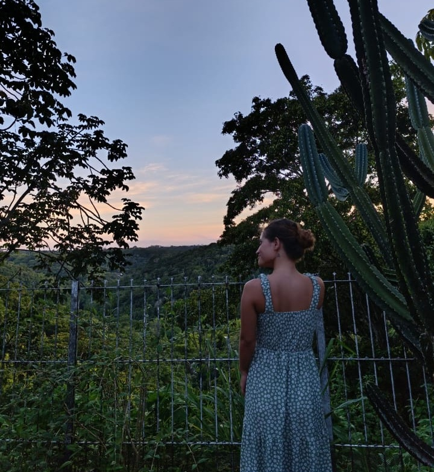
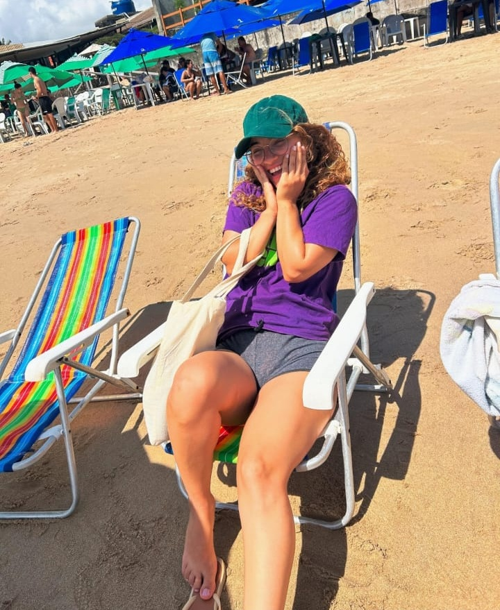
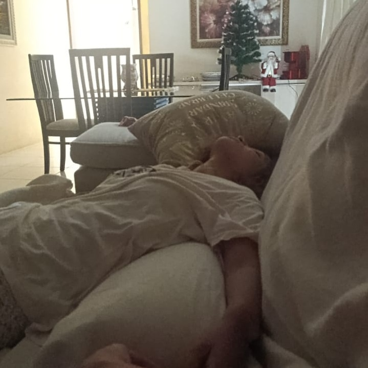
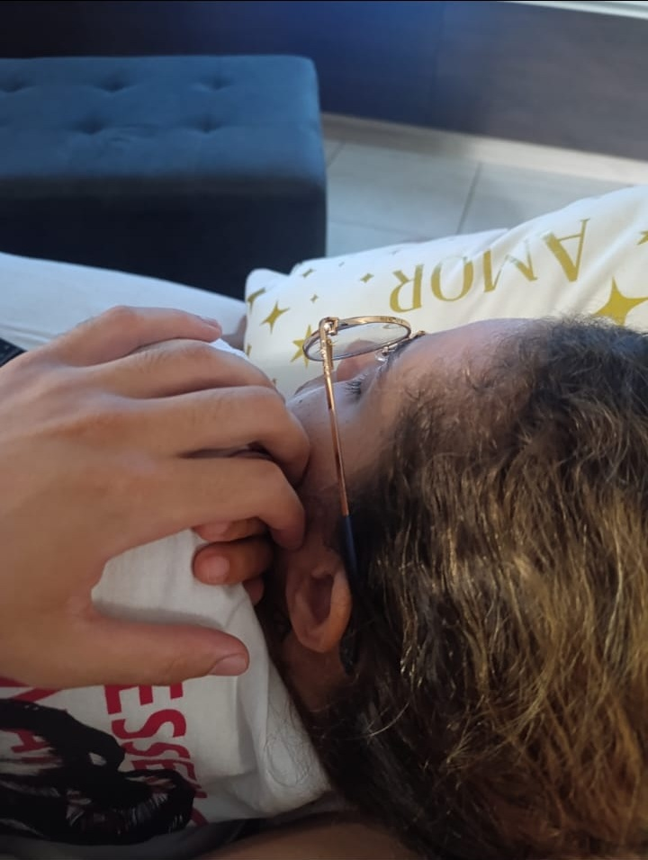
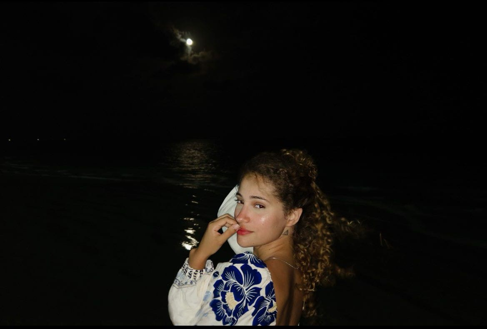
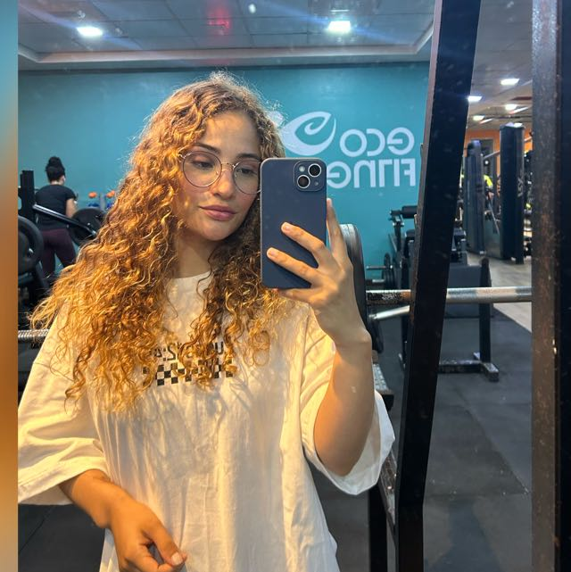
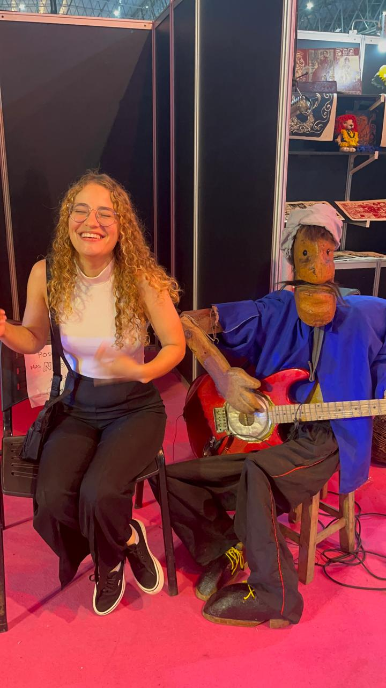
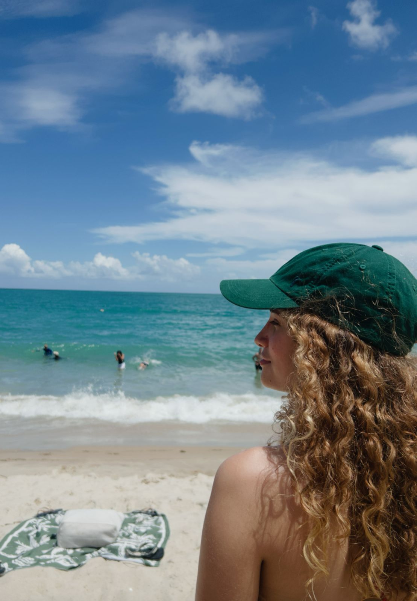
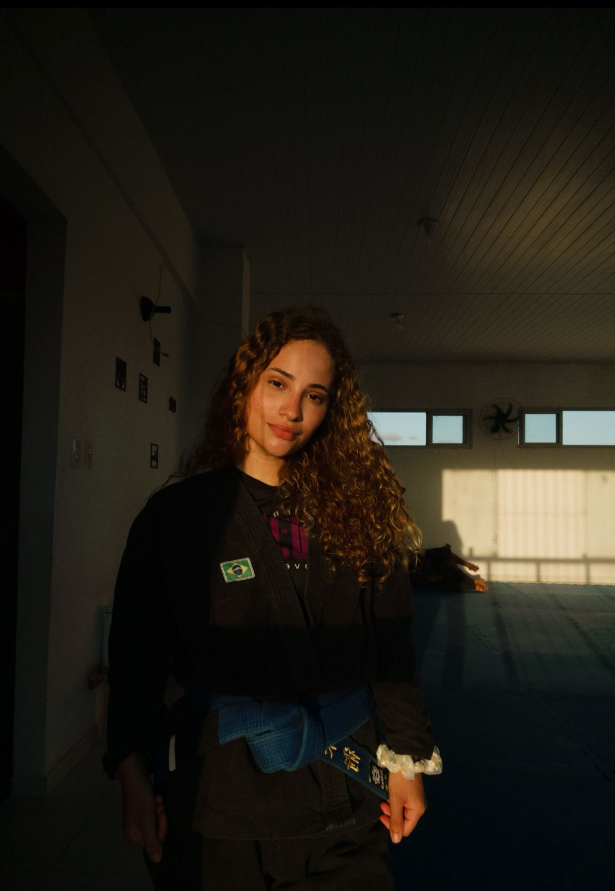
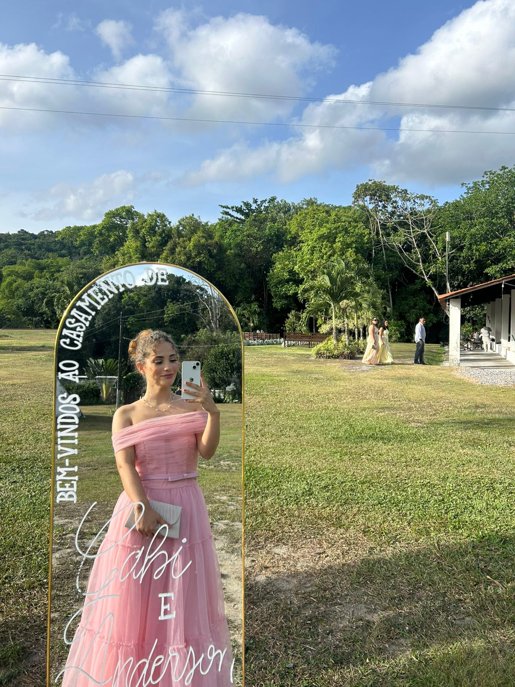
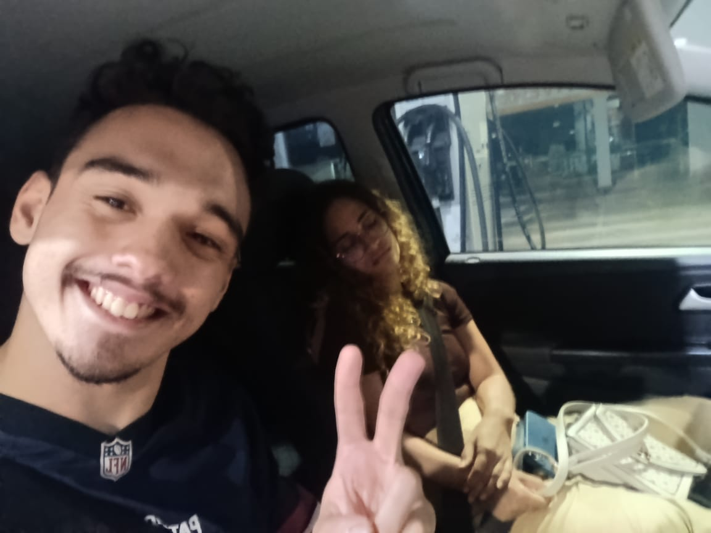